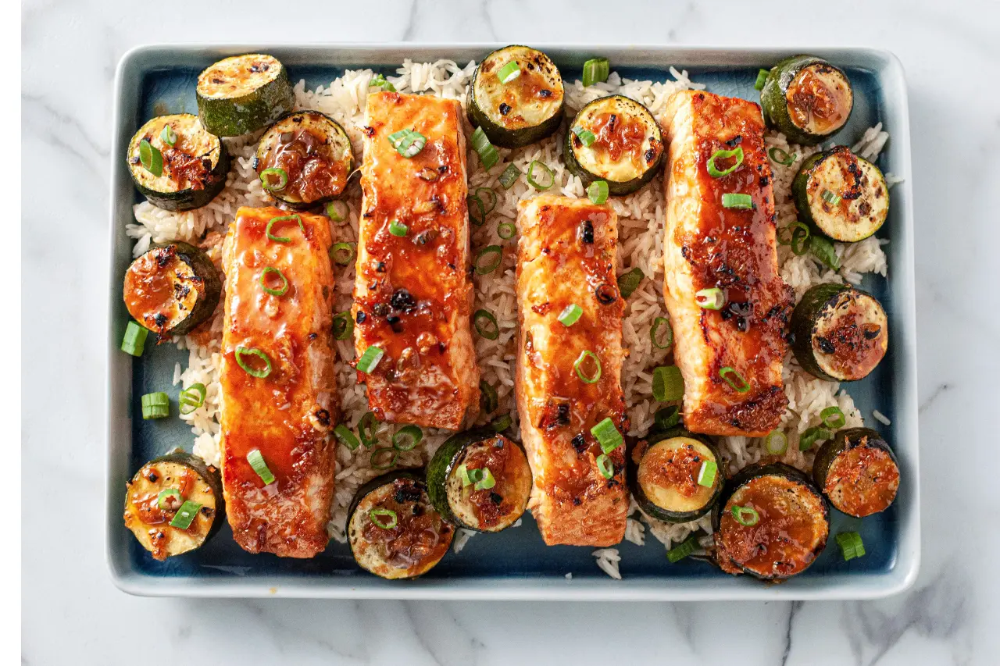

Sriracha Maple Salmon

Sriracha Maple Salmon combines the heat of hot sauce with sweet maple syrup for an easy seafood dinner. The prep time is quick, roughly 5 minutes, with a cook time of 10 minutes. This recipe will yield 4 servings. We reccommend serving with brown rice, and a green salad.
Ingredients
- 4 6-oz skinless salmon fillets
- 3 medium zucchinis, cut into 1-inch rounds
- 3 tablespoons olive oil
- 1/4 cup low-sodium soy sauce
- 1/4 cup maple syrup
- 3 tablespoons grated fresh ginger
- 3 tablespoons rice wine vinegar
- 2 tablespoons sriracha
- 1 teaspoon cornstarch
- 4 cloves garlic, grated
- 3 green onions, sliced, whites and greens separated
- Cooked rice, for serving
Directions
- Turn the oven on to broil and position the rack in the upper third of the oven.
- Add the salmon fillets, flesh side up, to one side of a large baking dish. Add the zucchini to the other side. Drizzle the salmon and zucchini with olive oil.
- Mix the soy sauce, maple syrup, ginger, rice vinegar, sriracha, cornstarch, garlic and whites of the onions in a small bowl; whisk until combined. Pour the sauce over the salmon and zucchini. Transfer to the broiler and cook for 7 minutes. Remove from the oven and spoon the sauce over the salmon, flipping the zucchini. Return the baking dish to the broiler and cook until the salmon has cooked through and the sauce has thickened, an additional 6 to 7 minutes.
- Add the rice to the bottom of a large platter, then top with the maple syrup sriracha salmon. Add the zucchini to the platter. Spoon over the remaining sauce from the baking dish. Garnish with the reserved green onions. Serve.
Back to Homepage